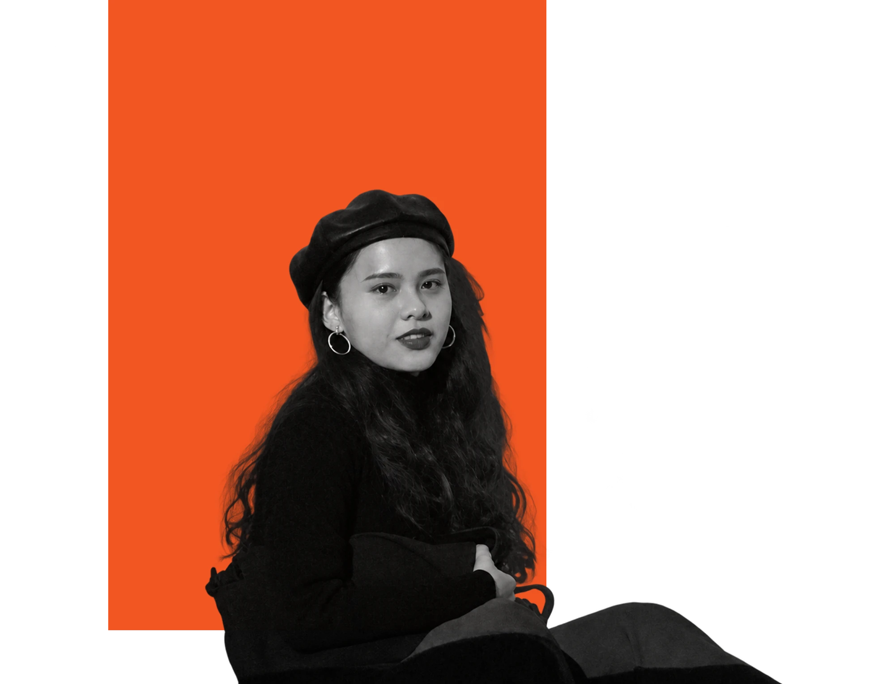
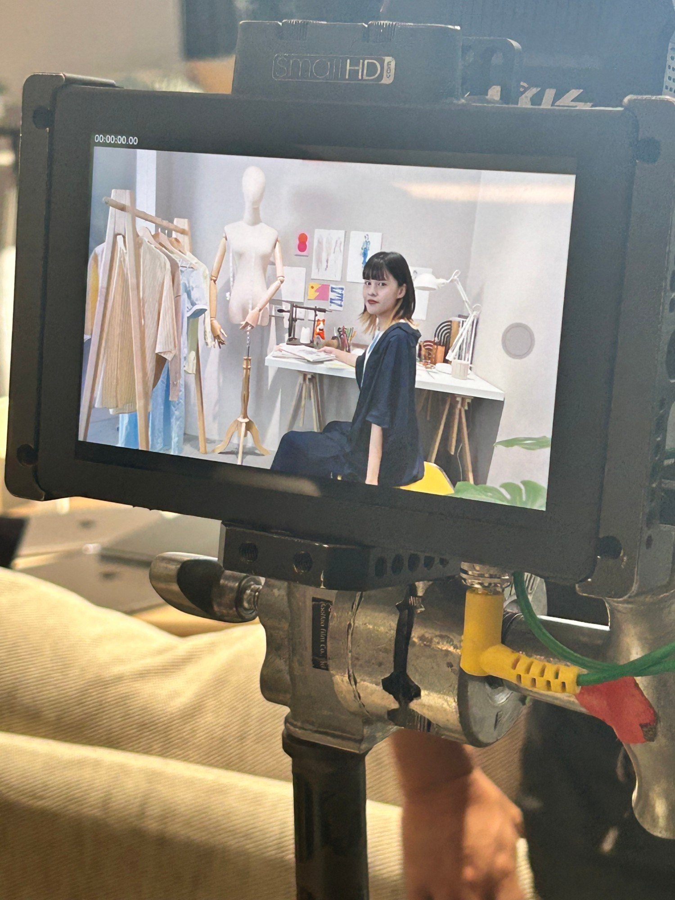
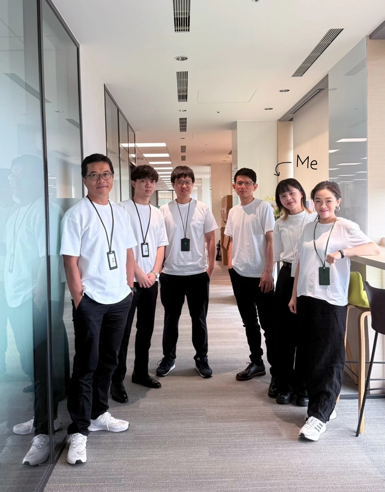
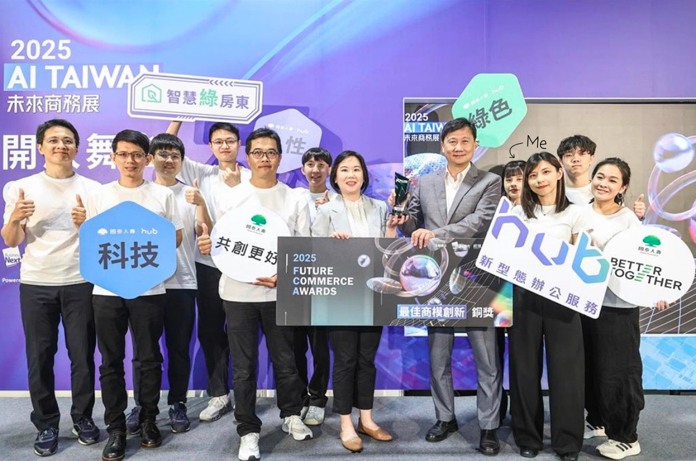

I notice things. Then I ask why.
我喜歡觀察、體驗，也總會忍不住問一句：「為什麼？」
裝飾房間時，我會觀察什麼讓一個空間看起來舒服，也會想著怎麼兼顧美感、自己的風格和日常習慣；拍照時，我會留意當下的光線與氛圍，思考怎麼把那一刻的感受留下來。
我發現自己喜歡的不只是體驗，而是把體驗變成一個作品。這也是我走進產品的原因——從問題、解法到最後的呈現，把一個想法慢慢做成真正被使用的產品。
我也相信好的產品沒有一次到位，做出來、被使用、再調整，在迭代中讓體驗變得更好。
工作之外，我喜歡拍照、逛家具店，也喜歡體驗新的事物。生活裡的新鮮感，常常是我靈感的來源。

Experience
Product Manager @ Cathay Financial Holdings
Jul 2025 – PresentProduct Intern @ Cathay Financial Holdings
Nov 2024 – Jun 2025Member @ NTU Design Thinking Club
Sep 2023 – May 2024Member @ NCU Impact Entrepreneur Lab
Jun 2023 – Feb 2024Moments


